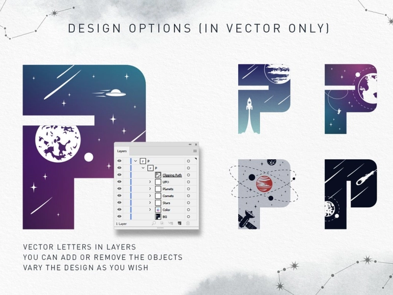

Candy
Файл цветного шрифта на самом деле является обычным файлом шрифта, который включает дополнительные данные для отображения большего количества графических свойств, чем контурные формы символа.
Цветные шрифты теперь обычно хранятся в виде данных SVG внутри файлов шрифтов OpenType. Этот формат SVG (масштабируемая векторная графика) может содержать векторные фигуры с цветом или градиентами, а также может включать растровые изображения, что приводит к растровым шрифтам .
Таким образом, цветные шрифты теперь официально называются шрифтами OpenType-SVG.

Bruce Willis
Это современный шрифт с модным эффектом двойной экспозиции. Каждая буква уникальна и имеет свою космическую историю.
Например «А» — НЛО похищает оленя, «Б» — рождение новой Вселенной, «Н» — к Земле летит огромный астероид, кого-то называет этот шрифт - Брюс Уиллис